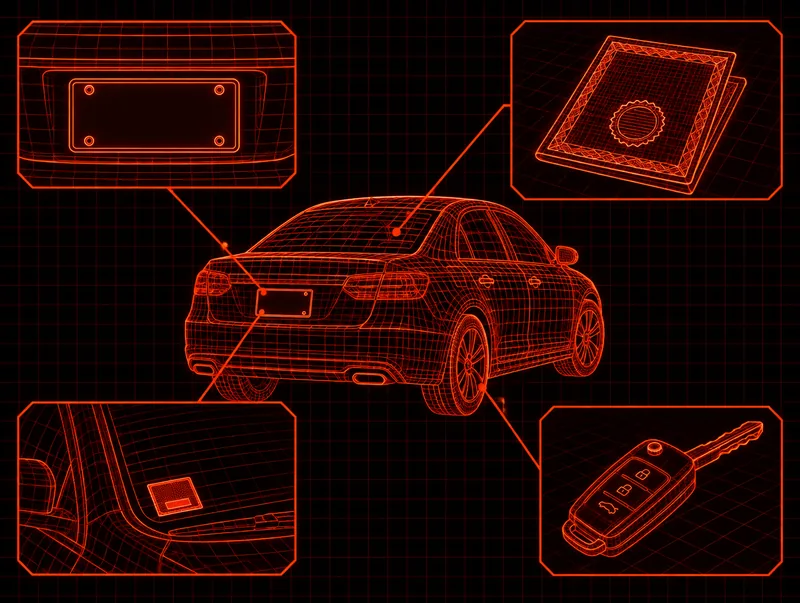

Agente autorizado de PennDOT en Phoenixville, PA
Los agentes autorizados son negocios privados con contrato con PennDOT para completar solicitudes de título y registro. Las solicitudes de título de PennDOT, el Formulario MV-4ST para un título de Pennsylvania y el Formulario MV-1 para un vehículo con título de otro estado, no están disponibles en línea. Un agente las completa con usted.
En Diverse Autoworks puede firmar el título ante nuestro notario, tramitar el título y el registro, recibir sus placas y pasar la inspección estatal, todo en un solo taller.
Trámites de placas y títulos que hacemos
- Traspasos de título cuando compra o vende un vehículo entre particulares
- Registro y placas de Pennsylvania
- Pasar su placa actual a un vehículo que acaba de comprar
- Título y registro de un vehículo de otro estado cuando se muda a Pennsylvania
- Títulos y placas de vehículos de empresa y de flotas
- Notarización de firmas en títulos, de lunes a viernes, de 8 a. m. a 3 p. m. Vea servicios de notario.
Comprar o vender un auto entre particulares
En Pennsylvania, la firma del vendedor en el título debe ser notarizada o verificada, y el comprador tiene 20 días desde la venta para solicitar el nuevo título. Haga la firma y la solicitud del título en una sola visita.
| Quién | Qué debe traer |
|---|---|
| Vendedor | El título original a su nombre, sin firmar; identificación con foto vigente; la liberación del gravamen si el vehículo tuvo un préstamo |
| Comprador | Identificación con foto que coincida con el nombre de la solicitud; comprobante de seguro de Pennsylvania para el vehículo |
Qué pasa con la placa
Después de que se transfiere el título, el vendedor retira la placa y la guarda para otro vehículo o la devuelve a PennDOT. Nunca le entregue la placa al comprador. Si el comprador ya tiene una placa de Pennsylvania, podemos pasarla al vehículo que está comprando.
Inspección después de la venta
PennDOT exige que el vehículo se inspeccione dentro de los 10 días posteriores a la venta, a menos que tenga una calcomanía de inspección vigente. Hacemos inspecciones de seguridad y pruebas de emisiones de Pennsylvania aquí. Vea inspecciones estatales.
Para las reglas de firma, los títulos con varios propietarios, los regalos entre familiares y los títulos de otros estados, vea nuestra guía del notario.
Mudarse a Pennsylvania con su vehículo
Los nuevos residentes deben solicitar el título y el registro de Pennsylvania dentro de los 20 días posteriores a su mudanza. Traiga:
- Su título de otro estado, a su nombre
- Comprobante de seguro de Pennsylvania, como una tarjeta de seguro o la página de declaraciones de la póliza
- Identificación con foto
- Un calco del VIN, o una verificación del VIN hecha por un mecánico de inspección certificado o un notario
Si un prestamista tiene su título, comuníquese primero con él: muchos prestamistas de otros estados no liberan el título hasta que se paga el préstamo.
Una vez registrado en Pennsylvania, el vehículo debe pasar la inspección de seguridad dentro de los 10 días siguientes. La mayoría de los vehículos de gasolina e híbridos registrados en los condados de Chester y Montgomery también necesitan la prueba de emisiones, y hacemos ambas en la misma visita.
Tarifas de PennDOT e impuesto sobre las ventas
| Concepto | Monto |
|---|---|
| Certificado de título | $72 |
| Registro de vehículo de pasajeros, por año | $48 |
| Impuesto sobre las ventas por la compra de un vehículo | 6% del precio de compra o del valor actual de mercado (7% en el condado de Allegheny, 8% en Filadelfia) |
Estas son las tarifas que indica PennDOT, y cambian de vez en cuando. Los agentes autorizados también pueden cobrar su propia tarifa de servicio, que PennDOT deja a cada agente. Llámenos antes de venir para saber el total de su trámite.
Las reglas y tarifas de PennDOT en esta página vienen de: PennDOT: agentes y mensajeros autorizados (en inglés) · Hoja informativa de PennDOT: compra o venta de un vehículo (PDF, en inglés) · PennDOT: transferir el registro de un vehículo de otro estado (en inglés) · PennDOT: pagos y tarifas (en inglés) · Código de Vehículos de Pennsylvania, 75 Pa.C.S. § 1111 (en inglés). Revisado en octubre de 2026. Esta página es información general, no asesoría legal.

Traiga a cualquier trámite de placas y títulos
- Identificación con foto vigente de cada persona que firma
- El título original, sin firmar
- Comprobante de seguro de Pennsylvania
- La liberación del gravamen, si hubo un préstamo
- El pago del impuesto sobre las ventas y las tarifas
Cada trámite es un poco diferente. Llame antes de venir y le diremos exactamente qué necesita el suyo.
Preguntas frecuentes sobre placas y títulos
¿Son agentes autorizados de PennDOT?
Sí. Diverse Autoworks es agente autorizado de PennDOT. Hacemos trámites de placas y títulos y entregamos placas en 1415 Pawlings Road, en Phoenixville.
Compré un auto a un particular. ¿Qué necesito para traspasar el título?
El título firmado por el vendedor y notarizado, una identificación con foto que coincida con el nombre de la solicitud y un comprobante de seguro de Pennsylvania para el vehículo. Si el vendedor todavía no ha firmado, vengan juntos y nuestro notario puede presenciar la firma. El impuesto sobre las ventas y las tarifas de PennDOT se pagan cuando presentamos la solicitud.
¿Cuánto tiempo tengo para tramitar el título de un vehículo que compré?
La ley de Pennsylvania le da al comprador 20 días desde la venta para solicitar un nuevo título. El vehículo también necesita la inspección de seguridad dentro de los 10 días posteriores a la venta, a menos que tenga una calcomanía vigente.
¿Puedo pasar mi placa al auto que acabo de comprar?
Sí. Si tiene una placa de Pennsylvania de un vehículo que vendió o cambió, podemos pasarla al vehículo que compró.
Me acabo de mudar a Pennsylvania. ¿Cómo registro mi auto?
Haga el trámite dentro de los 20 días posteriores a su mudanza. Traiga su título de otro estado a su nombre, un comprobante de seguro de Pennsylvania, una identificación con foto y un calco o una verificación del VIN. Completamos el Formulario MV-1 con usted. Después del registro, el vehículo necesita la inspección de seguridad de Pennsylvania dentro de los 10 días siguientes, y también la hacemos aquí.
¿Cuánto cuesta un traspaso de título?
PennDOT indica una tarifa de título de $72 y $48 al año por registrar un vehículo de pasajeros, más el 6% de impuesto sobre las ventas del precio de compra o del valor de mercado para los residentes del condado de Chester. Los agentes pueden agregar una tarifa de servicio. Llámenos para saber el total de su trámite.
¿Qué debe hacer el vendedor con la placa?
Retirarla después de que se transfiere el título. Guárdela para pasarla a otro vehículo de su propiedad o devuélvala a PennDOT. No le entregue la placa al comprador.
¿Los trámites de placas y títulos son lo mismo que el servicio de notario?
No. El notario presencia las firmas en el título y en otros documentos, de lunes a viernes, de 8 a. m. a 3 p. m. Los trámites de placas y títulos son la solicitud ante PennDOT, el registro y las placas. La mayoría de los traspasos de título necesitan ambos, y puede hacer los dos aquí en una sola visita.
Placas y títulos cerca de Phoenixville, PA
Llame a Diverse Autoworks antes de venir y le diremos qué debe traer para su traspaso de título, registro o placas. Estamos en 1415 Pawlings Road, Phoenixville, PA 19460.